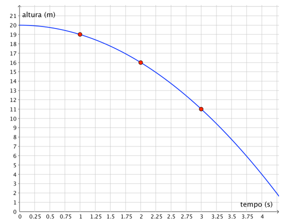

O gráfico acima de um objeto em queda livre representa a trajetória do movimento?
- A) Sim, pois só a altura importa em uma queda livre
- B) Não, pois não é um movimento uniformemente variado
- C) Sim, pois o movimento é uniformemente variado
- D) Não, pois a trajetória deve ser um gráfico de altura por distância em metros